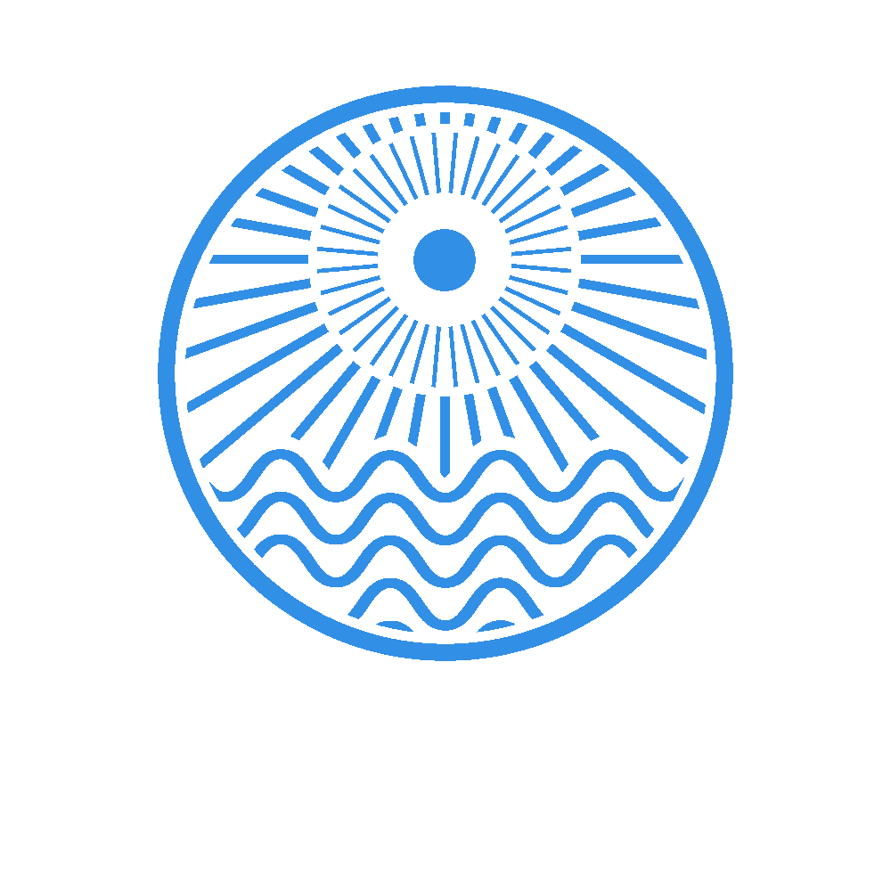

We are a collective called Institute of Art and Camping. We bring together the temporal and experimental through sound, happenings, curiosity, and art. We embrace the idea of occupying different spaces.
We host an annual non-profit collaborative summer residency / art camp on the grounds of Heilstätte Grabowsee, fostering artistic collaboration through workshops, readings, performances, chance happenings, and communal living.
We aim to cultivate a peaceful creative community where participants are encouraged to experiment, collaborate and be inspired.
The project began in 2012 when a collective formed after meeting in a basement club in Berlin, building odd installations.
The first year was a casual event to prepare for a techno festival that never happened. The following year we received some funding which allowed us to build the first infrastructure: a kitchen, running water, compost toilet, pizza oven and treehouse.
Since then the project has grown year by year, evolving into something wonderfully difficult to explain.
Community is fundamental to everything we do. Countdown Grabowsee is a slow-growing community where kindness, tolerance and mutual support come first.
We are not corporately or privately funded. The project runs through the hard work, generosity and passion of everyone involved.
We do not tolerate violence or discrimination and strive for an open environment where humans and non-humans can coexist.